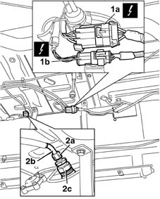
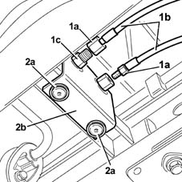
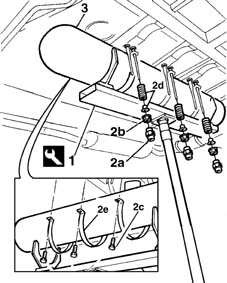

1043A06 gpl tank complete with submerged fuel tank and valve unit r r
- Path
- Procedures > 10 ENGINE UNIT > 1043 LGP TANK AND PIPES > 1043A gpl tank > 1043A06 gpl tank complete with submerged fuel tank and valve unit r r
- Kind
- repair procedure (removal / refitting; the operation number is the code)
- Applies to
- engines: 1.6 16v; all production periods; only with equipment: GPOWER
- Interactive page
- https://sloeber94.github.io/elrnDB-fMltpl/en/#/2891492
Applies to: engines: 1.6 16v; all production periods; only with equipment: GPOWER and Euro 3
 Removing
Removing
 Refitting
RefittingDrain the section of the pipe from the recharging filler to the tank and the LPG supply and return pipes from the tank to the pressure regulator, following the procedure and the reguations descibed 1043A02 lpg system lines pipe draining operations .
Return the vehicle to the workshop and place it on a lift.
Disconnect the battery negative terminal.
1043E12 gpl tank guard protection r r .
1. Disconnect the electrical connectors for the pump management device (1a) and the LPG level sensor (1b).
 | Name | Connector |
|---|---|---|
1a | Availability. of electric pump and GPL supply. solenoid valve. |
| Name | Connector |
|---|---|---|
1b | GPL level sensor |
2. Undo the connector (2a) between the LPG filler pipe (2b) and the filler valve 80% (2c).

Applies to: engines: 1.6 16v; all production periods; only with equipment: GPOWER and Euro 3
1. Undo the connectors (1a) and disconnect the LPG supply/return pipes (1b) from the connectors (1c) on the intermediate bracket (pressure regulator side).
2. Using a drill, remove the rivets (2a) fixing the connector intermediate mounting bracket (2b).
Release the pipes (tank side) from the retaining bands.

Applies to: engines: 1.6 16v; all production periods; only with equipment: GPOWER and Euro 3
Position the tool for supporting the canisters on a hydraulic lift prepared for supporting the weight of the canister.
1. Position the tool for supporting the canister.
 | Name | Country |
|---|---|---|
1 | Support for CNG canisters | 1.870.732.000 |
Use the following tool when dismantling the twin tank.
| Name | Country |
|---|---|---|
- | GPL twin canister support | 1.870.833.000 |
2. Undo the bushes (2a) for the shield bots housing, the securing nuts (2b) and the fixing bolt (2c); recover the bushes and the springs (2d) and remove the fixing collars (2e).
3. Carefully lower the lift and remove the canister.

Applies to: engines: 1.6 16v; all production periods; only with equipment: GPOWER and Euro 3
With the help of a second operator, remove the canister from the tool, complete with supply and return pipes and intermediate bracket; position the canister on suitable supports.
Applies to: engines: 1.6 16v; all production periods; only with equipment: GPOWER and Euro 3
Refitting
RemovingTake the canister and position it on the supporting tool.
| Name | Country |
|---|---|---|
- | Support for CNG canisters | 1.870.732.000 |
Use the following tool if the twin tank is being refitted.
| Name | Country |
|---|---|---|
- | GPL twin canister support | 1.870.833.000 |
Lift the tool carefully and position the canister in the special housing, alignining the references made during the removal.
Fit the locking collars and tighten the bolts to the recommended torque.
 | Fastening | Component | Ø | Value (daNm) |
|---|---|---|---|---|
- | Bolt | LPG TANK FASTENERS | M8 | 2.5 |
Fit the springs and bushes and tighten the fixing nuts to the recommended torque.
| Fastening | Component | Ø | Value (daNm) |
|---|---|---|---|---|
- | Nut | LPG TANK FASTENERS | M10 | 1.5 |
| Fastening | Component | Ø | Value (daNm) |
|---|---|---|---|---|
- | Pin | LPG TANK FASTENERS | M12 | 6 |
Remove the canister supporting tool.
Fit the intermediate connector bracket and secure using new rivets.
Connect the LPG supply/return pipes (pressure regulator side) to the connectors on the intermediate bracket.
Tighten the connectors for the LPG supply and return pipes to torque.
| Fastening | Component | Ø | Value (daNm) |
|---|---|---|---|---|
- | Connector | L.P/G SUPPLY.RETURN PIPE CONNECTOR.. | - | (supply) 1.4 |
| Fastening | Component | Ø | Value (daNm) |
|---|---|---|---|---|
- | Connector | L.P/G SUPPLY.RETURN PIPE CONNECTOR.. | - | (return) 1.6 |
Secure the LPG supply and return pipes to the retaining bands.
Connect the LPG supply pipe to the 80% filler solenoid valve tightening the connector on the actual pipe to torque.
| Fastening | Component | Ø | Value (daNm) |
|---|---|---|---|---|
- | Connection | PIPE FROM FILLER TO LPG TANK | 1/4 GAS | (tank) 1.6 |
Connect the electrical connectors for the pump management device and the LPG level sensor.
| Name | Connector |
|---|---|---|
- | Availability. of electric pump and GPL supply. solenoid valve. |
| Name | Connector |
|---|---|---|
- | GPL level sensor |
Tighten the connectors for the LPG delivery and return pipes from tank to pressure regulator on the pressure regulator that were loosened previously to drain the LPG present in this pipe section.
| Fastening | Component | Ø | Value (daNm) |
|---|---|---|---|---|
- | Niplo | LPG DELIVERY PIPE FROM CONNECTOR TO REGULATOR. | M10 x 1 | (regulator) 1 |
| Fastening | Component | Ø | Value (daNm) |
|---|---|---|---|---|
- | Niplo | LPG RETURN PIPE FROM CONNECTOR TO REGULATOR. | M10 x 1 | (regulator) 1 |
1043A04 gpl system and pipes check for leaks .
1043E12 gpl tank guard protection r r .
Connect the battery negative terminal.
Remove the vehicle from the ramp.
Topics linked from this page (5)
- 1043A02 lpg system lines pipe draining operations
- 1043A04 gpl system and pipes check for leaks
- 1043E12 gpl tank guard protection r r
- K33 GPL level sensor
- M17 Availability. of electric pump and GPL supply. solenoid valve.